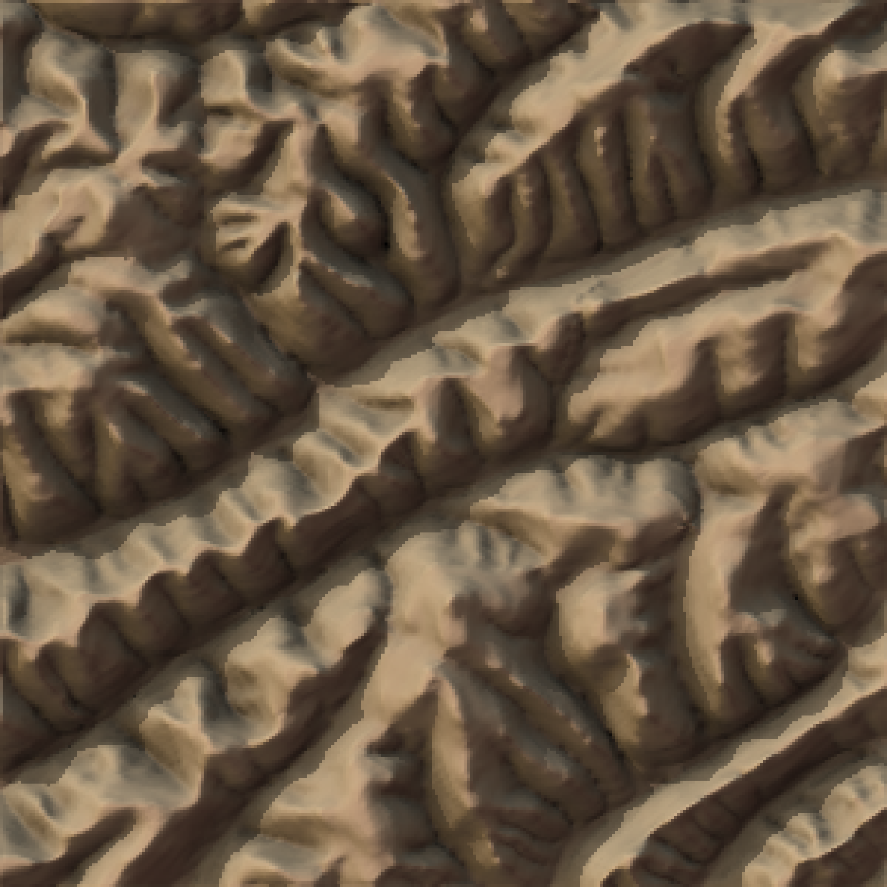
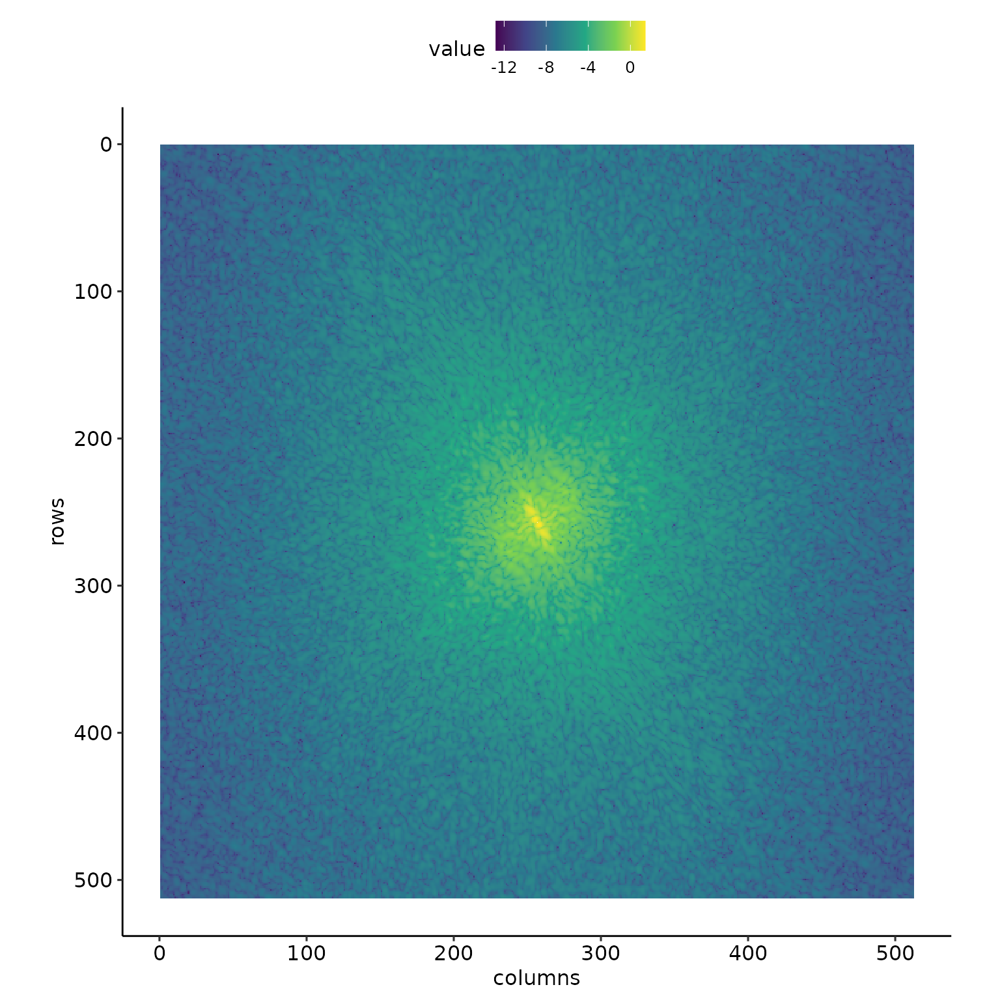
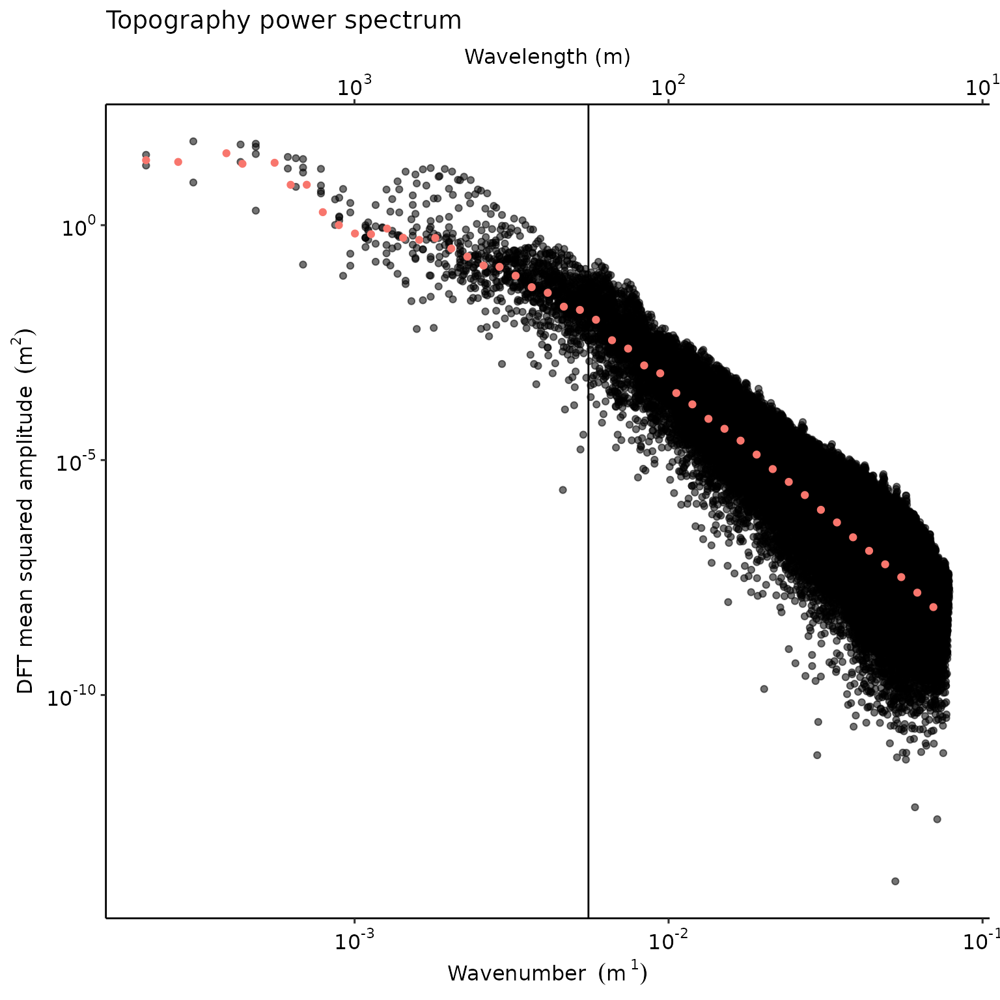

basic_2dft.RmdThe code of fft2d(), bin() and Hann2D() is for the most part a port from Matlab to R of the code from 2DSpecTools: A 2D spectral analysis toolkit for Matlab by J. Taylor Perron et al. In consequence, a great introduction to this code is reading Perron, Kirchner, and Dietrich (2008) paper in which the authors apply spectral analysis to two examples in California (USA).
First, we load a raster corresponding to one of the two examples from Perron, Kirchner, and Dietrich (2008), the one located near Gabilan Mesa in California.
library("statisticalRoughness")
library("rayshader")
library("raster")
gabilan_mesa <- raster(file.path(system.file("extdata/rasters/", package = "statisticalRoughness"), "gabilan_mesa.tif"))First, we detrend the DEM using detrend_dem() and convert it to a matrix.
summary(gabilan_mesa)
#> gabilan_mesa
#> Min. 215.8804
#> 1st Qu. 290.5542
#> Median 311.2366
#> 3rd Qu. 331.4969
#> Max. 381.4826
#> NA's 0.0000
gabilan_mesa <- gabilan_mesa %>% detrend_dem()
summary(gabilan_mesa)
#> gabilan_mesa
#> Min. -128.593304
#> 1st Qu. -31.408450
#> Median -2.761952
#> 3rd Qu. 31.035896
#> Max. 115.623467
#> NA's 0.000000Here is what the area looks like. We can clearly see the imprint of Perron, Kirchner, and Dietrich (2008)’s Fig. 3a.
gabilan_mesa %>%
raster_to_matrix() %>%
sphere_shade(texture = "desert") %>%
add_shadow(ray_shade(gabilan_mesa %>% raster_to_matrix(), sunaltitude = 20), max_darken = 0.3) %>%
add_shadow(ambient_shade(gabilan_mesa %>% raster_to_matrix()), 0) %>%
plot_map()
As gabilan_mesa is already a matrix that we can pass directly to fft2d() with a Hann window (Hann = TRUE ensures that Hann2d() is called). We also bin the power spectrum using bin() and visualize the results with spectrum_plot(). For convenience, we report as a vertical line the rolloff frequency identified in Perron, Kirchner, and Dietrich (2008)’s Fig. 4a.
raster_resolution <- 9.015
FT2D <- fft2D(raster::as.matrix(gabilan_mesa), dx = raster_resolution, dy = raster_resolution, Hann = TRUE)
view_matrix(log10(Re(FT2D$spectral_power_matrix)), ply = FALSE)
While produced with different underlying data, this plot passes the sanity check against Perron, Kirchner, and Dietrich (2008)’s example.
nbin <- 50
binned_power_spectrum <- bin(log10(FT2D$radial_frequency_vector), log10(FT2D$spectral_power_vector), nbin)
binned_power_spectrum <- na.omit(binned_power_spectrum)
spectrum_plot(binned_power_spectrum, FT2D) + ggplot2::geom_vline(xintercept = 1/180)
Perron, J. Taylor, James W. Kirchner, and William E. Dietrich. 2008. “Spectral Signatures of Characteristic Spatial Scales and Nonfractal Structure in Landscapes.” Journal of Geophysical Research: Earth Surface 113 (F4): n/a–n/a. https://doi.org/10.1029/2007JF000866.